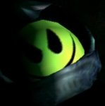
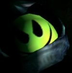
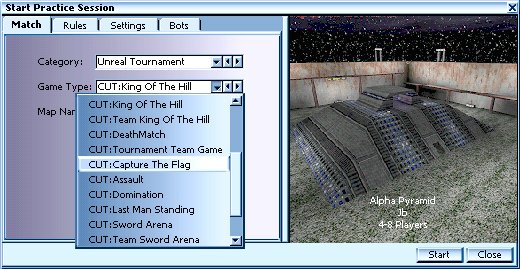

Starting the Game
main
| introduction
| installation
| configs |
starting
chaos |
| the
weapons
| features | koth | server
setup | credits |

|
|
main
| introduction
| installation
| configs |
starting
chaos | |
 |
** There are 2 ways to start a ChaosUT match !! With a CUT game type, or the ChaosUT V1.0 Mutator **
Starting ChaosUT: with the gametypes
NOTE: There are a few features in CUT which are only available in the CUT game types!! Examples would be custom CUT team icons, and a new HUD message, which identifies turrets as friend or foe.  Start UT as always, and then you simply use the "Game Type:" menu to choose one of the provided CUT game types. When using this method, you do not need to select the ChaosUT V1.1 Mutator. All of the weapons and features of Chaos are loaded automatically when you use the Chaos game types.
However, you may still choose to use some of the mini mutators. For example, you might use the CUT game type, and still choose to use the CUT:Sword Melee mutator.
Server Admins : The preferred method for running a Chaos server is by using the CUT game types. This method will make your server visible on the CUT Server Tab !
Starting ChaosUT: with the mutator
NOTE: There are a few features in CUT which are only available in the CUT game types!! Examples would be custom CUT team icons, and a new HUD message, which identifies turrets as friend or foe.
Simply go to your mutator selection screen, and double click on the ChaosUT V1.1 Mutator to move it to the 'Mutators Used' column. This will allow you to use the Chaos weapons and items on ANY STANDARD UT MAP, and ANY UT GAMETYPE.
This one mutator will cause certain weapons to rotate between standard UT weapons, and the new ChaosUT weapons, every 30 seconds. It will also enable the various other features of ChaosUT.
This is the main mutator for playing Chaos, and is the only one needed for a standard game. The rest are optional, and are described below.
|
Additional mini-mutators:
. |
|
Together with the main ChaosUT V1.1 Mutator comes a package of some optional mini-mutators The following mini-mutators were intended to be used in combination (!!!) with the main ChaosUT V1.1 Mutator, without it, your results may vary. Everyone's starting melee weapon is a ChaosUT Bastard Sword Arena Mutator - All weapons and ammo are replaced with the ones that are selected in the ChaosUT Configs under the Arena Mutator selection. These you may use without the main ChaosUT V1.1 Mutator Removes all MedBoxes, HealthVials, and the Keg O' Health GrappleOnly - Allows you to use the famous ChaosUT grappling hook in non-ChaosUT games ( Enjoy! ) |
|
Additional Gametypes:
. |
|
For various reasons, we have provided a CUT game type to replace each of the standard UT gametypes. ( DM, CTF, etc. ) However, in addition to those, we have also provided a few additional game types. King of the Hill - Also known as KOTH, this is our version of an old favorite. Win the game by staying in control of certain areas of the map. Requires KOTH specific maps to play. Read much more in our KOTH section of the manual. Team KOTH - Work with your teammates to control the hill!
SwordArena
-
Also known as SA, this game type does the same thing as using the Sword
version of Arena Mutator. Team Sword Arena -
Team Deathmatch
with swords only. Works on any standard UT map.
|
For news about future updates & new features, bug fixes, discussion board and everything else you want to know about ChaoticDreams don’t forget to check out our ChaosUT home-site at http://dynamic4.gamespy.com/~chaotic/index.php
|
main
| introduction
| installation
| configs |
starting
chaos | |
c'2002
Chaotic Dreams